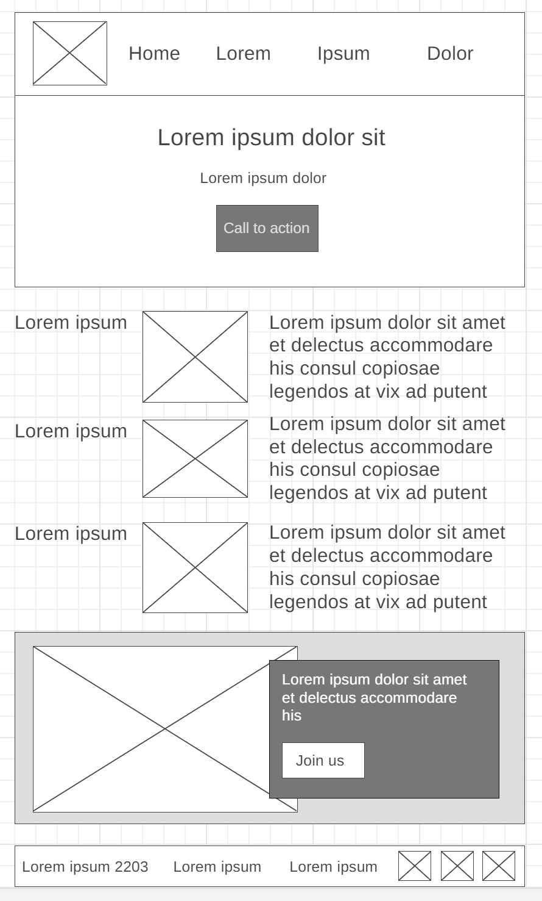
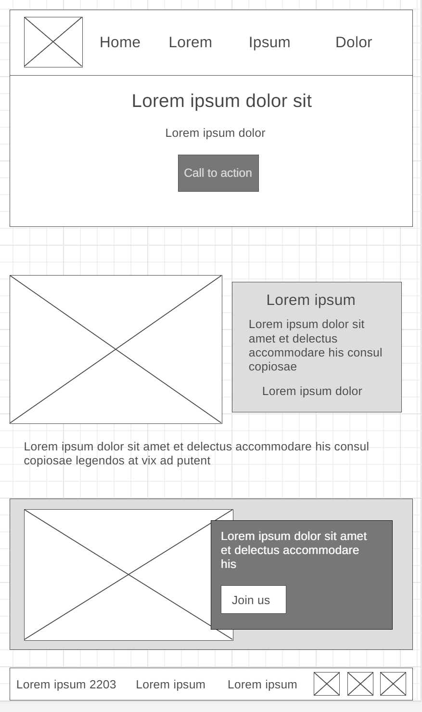

Overview
Purpose
This website is an online platform for digital storytelling, which may include animated shorts or stories enriched by AI. It's a one-of-a-kind experience because to the innovative use of technology, artistic flair, and various kinds of media. The purpose of this work is to transform narrative and show exciting ways of introducing AI elements.
Audience
This is an attempt at merging technology and art in one place. Experts in the field as well as the general public who are just seeking for a little online entertainment are going to appreciate it.
Branding
Website Logo
Style Guide
Color Palette
Palette URL: https://coolors.co/ddbd73-28142c-a2825a-7866ab-34377e| Primary | Secondary | Accent 1 | Accent 2 |
|---|---|---|---|
| [#34377E] | [#DDBD73] | [#28142C] | [#7866AB] |
Typography
Heading Font: IM Fell French Canon
Paragraph Font: Lato, Helvetica, sans-serif
Normal paragraph example
This website is an online platform for digital storytelling, which may include animated shorts or stories enriched by AI. It's a one-of-a-kind experience because to the innovative use of technology, artistic flair, and various kinds of media. The purpose of this work is to transform narrative and show exciting ways of introducing AI elements.
Colored paragraph example
This website is an online platform for digital storytelling, which may include animated shorts or stories enriched by AI. It's a one-of-a-kind experience because to the innovative use of technology, artistic flair, and various kinds of media. The purpose of this work is to transform narrative and show exciting ways of introducing AI elements.
Navigation
Site Map
Content
Home page
For Page 1
Look into the Future of Enhanced Storytelling and Find Out What Happens When Real Writing Meets Music, Images, and AI.
Step into the future with the digital storytelling platform, where the strength of authentic writing is highlighted by the addition of music, images, and AI. Step into the new world, and experience a new audio-narrative adventure like no other?
Making audio-narrative history
The site attracts readers of books and listeners of audio-books who are interested in finding out more about the ways in which art, narrative, and AI can be combined. Short story fragments written by real authors and converted into audio-format (Audible) are brought to life with the help of immersive intelligent music and images, platform for people who are looking for a new, more immersive listening experience. Perhaps those that read books can check what this new narrative on my page is like and try to listen to their books, while fitting music is playing, and the images represent the events in the book.
Why the platform would attract users?
- Offer them an example of a listening experience unlike any other?
- It fuses together genuine novels, visual immersion, listening immersion, promotes the imagination through visual and audio triggers?
- Incorporate the music that fits the atmosphere of the event into audiobooks, the content has the potential to service platforms like Audible.com?
- Feature the examples of AI-generated music, images, and possibly animations on the second page.
- Use of music, visuals, and animations, help the listener to better immerse themselves into the heart of the action in a new innovative way
Images for the Home page


The Foundry
Narrative Creativity and Innovation meets Artificial Intelligence
Visitors can learn about general facts on Page 1, provide them with a brief description of what the page offers: narratives, enhance the immersion, and blend it with intelligent story-enhancing elements.
The questions that may be answered on page 1 for site visitors:
- How real authors and audio-services can work with AI to enhance the reading, listening, and viewing experience.
- How can AI Music enhance Emotional Connections in Audio-Books?
- How can AI Visuals and Animations enhance the Storytelling Experience?
Genuine authors who wrote the works and will be featured on the page
...list of the authors...
What should I communicate through my website to visitors: my goals
- Allow them to get lost in short fragments of the real audio-books that I will enhance by AI music and imagery.
- Allow them to hear some original music scores composed by AI that will fit seamlessly into the stories.
- Allow them to engage and connect with AI images, create a mood, and enhance their listening experience.
- Allow them to read up on some featured real authors' biographies and their published works.
What I need for my pages to be able to create interest and promote retention:
- Examples of audio-book fragments improved by machine learning.
- I need to think differently of how AI can contribute to the narrative sound, think of visuals, connection, mood.
- Profiles and writing samples from the real authors.
- Examples of images? How to create animations? How to create mood?
- Pages 2 and 3 will have the pieces that visitors can listen to and see the improvements.
Images for the Page 2


The History
This is the list of questions that site visitors most often ask:
The first thing I should do is allow the visitors to get to know the people who created these stories and made them come to life, my enhancements will only help with immersion.
- How AI can be combined with human and voice authors/actors to enhance the listening experience for an audio-book.
- "The Science Behind the Show": here I will allow them to read about the AI tools that are used to make these enhancements to audio-book fragments.
- "Keeping the unique style of writing": describe how I use AI to enhance the immersion but also preserve the original style of the audio-book.
- "Inspirational quest?": they can research to find out how people can interact with the site and maybe add their own AI-enhanced stories? Allow them to leave feedback on how the site can be improved? I'll need content moderation for that...
- How can the music and images be connected to what the story represents and affect the feelings of the listener?
- How the AI-Generated Visuals Can enhance the Storytelling narration of the audio-book?
Real authors, musicians, artists behind the stories?
I should think that people who visit the page want to:
- Check out the galleries and biographies of the real writers, as well as who narrated the audio-books, examples of enhancement free narration and comparisons Before and After.
- Find out how artificial intelligence can be utilized in other fields of art - music, general art, animation film?
- Provide content for how humans and AI work together today and make sure the story itself stays original. Author rights have to be preserved. AI just helps with immersion through music and imagery, where it wasn't used before. It would take a lot of resources to create a musical accompaniment for a whole book if you use a real orchestra.
- Find out more about how to submit works that have been improved by AI.
For the Conclusion
The platform provides a one-of-a-kind and immersive storytelling experience by highlighting authentic writing at its core and enhancing it with AI technology, music, and visuals. The material also has the potential to enhance services like Audible.com by incorporating appropriate music and imagery into audio-books. With the help of artificial intelligence, music, images, and storytelling, we'll be venturing into uncharted territory in the world of literature.
Images for the Page 3


Wireframes
Create three wireframes for your site. One for each page and list them here
Home
[- - -]

The Foundry Page
[- - -]
Contuct Us Page
[- - -]
